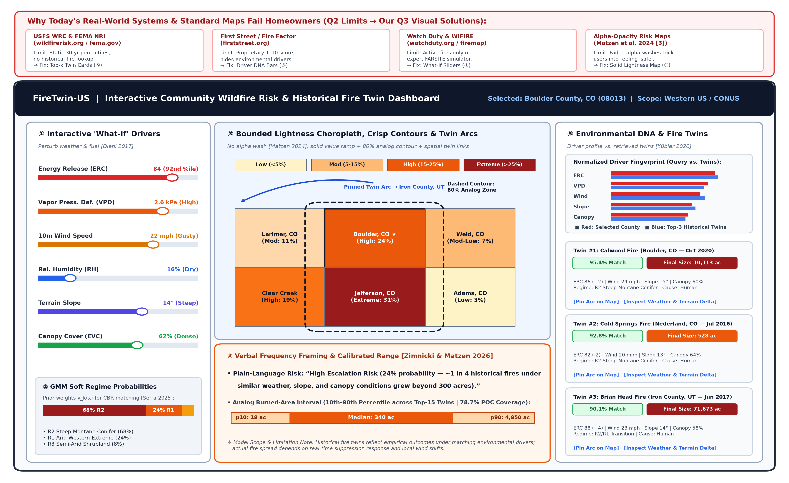
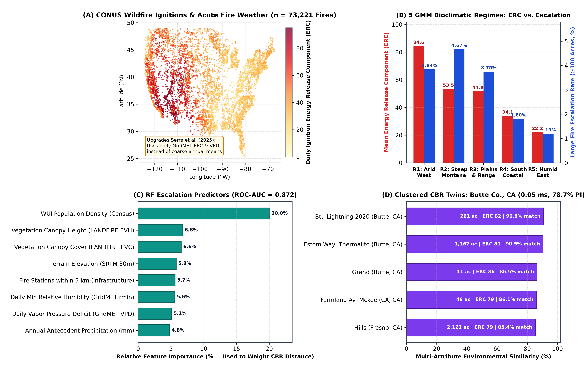
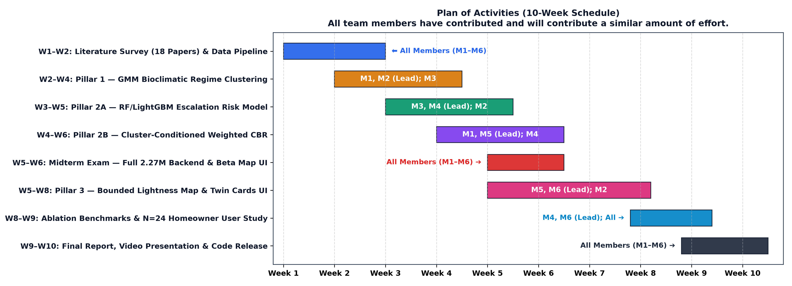

1. US Wildfire Risk Map (FireTwin-US): Problem, Users & Current Limits
Heilmeier Q1, Q2, Q4
🎯 Target Users & Core Objective (Q1, Q4)
45M+ US homes (~115M residents) live in the Wildland-Urban Interface (WUI).
Goal (No Jargon): Help homeowners, renters, and local communities understand local wildfire conditions and explore real historical fires ("Historical Twins") that burned under similar weather, terrain, and vegetation conditions.
⚠️ Limits of Today's Real-World Systems (Q2)
USFS WRC & FEMA NRI(Finney et al. 2011; Thompson et al. 2011): Static 30-year percentiles; no historical fire analog lookup.
First Street Fire Factor & Watch Duty: Proprietary black-box scores or active-incident-only alerts.
WIFIRE Firemap & LANDFIRE(Crawl et al. 2017; Rollins 2009): Built for tactical fire analysts, not citizens (Cortes et al. 2024).
Alpha-Transparency Trap(Matzen et al. 2024): Faded uncertainty washes trick laypeople into feeling "safe."

🎙️ Speaker Script (0:00–0:32): "[Q1, Q4] Over 45 million US homes sit in the Wildland-Urban Interface. We are building FireTwin-US, an interactive web map helping homeowners, renters, and communities understand local wildfire danger and explore real historical fires—'Historical Twins'—that burned under similar weather, terrain, and fuel conditions. [Q2] Today, federal portals like USFS FSim and FEMA NRI show static multi-decade averages, while WIFIRE targets active incident commanders. None retrieve historical analogs for citizens, and alpha-transparent uncertainty maps mislead laypeople into underestimating risk."
2. Live Interactive Dashboard Innovation (Task B — Embedded Prototype)
🎙️ Speaker Script (0:32–1:05): "[Q3 — Visualization] Here is our live interactive dashboard prototype. Guided by Matzen et al. (2024), we replace alpha-transparency washes with a Solid Lightness-Varying Risk Map and crisp 80% analog contours. Pairing Zimnicki & Matzen (2026) and Diehl et al. (2017), users can drag 'What-If' weather and canopy sliders to see their GMM soft regime probabilities, plain-language frequency banner ('1 in 4 fires exceeded 300 acres'), and pinned Historical Fire Twin arcs update in real time."
3. Computational Innovation & Executed Local POC Results
Pillar 1 (GMM Soft Regime Probabilities): Improves on annual-mean clustering (Serra et al. 2025) by clustering daily GridMET weather (ERC, VPD, Wind, RH), LANDFIRE canopy (EVC, EVH), and slope into 5 bioclimatic regimes.
Pillar 2 (RF-Weighted Continuous CBR + AnEn): Improves on discrete rule-table CBR (Dorodnykh et al. 2022) by weighting continuous retrieval with Random Forest escalation importances and forming 10th–90th percentile Analog Ensemble intervals (Delle Monache et al. 2013).
Retrieval Speed & Accuracy: 0.050 ms/query latency; reduces log-acres MAE vs. global k-NN; achieves 78.7% empirical coverage on the 80% analog interval.

🎙️ Speaker Script (1:05–1:38): "[Q3 — Algorithms] Computationally, we improve upon annual-average clustering (Serra et al., 2025) and discrete rule-table CBR (Dorodnykh et al., 2022) via GMM-Conditioned Feature-Weighted Case-Based Reasoning. Using soft GMM regime probabilities and Random Forest feature weights over daily GridMET weather and LANDFIRE fuels, our local POC across 73,221 US fires achieved 0.872 ROC-AUC, 0.05-millisecond retrieval latency, and 78.7% empirical coverage on the 10th-to-90th percentile burned-area interval."
4. Evaluation, Risks, Payoffs & 10-Week Work Package Schedule
Heilmeier Q5, Q6, Q7, Q8, Q9
🛡️ Risks, Mitigations & Payoffs (Q5, Q6)
Risk 1 (Scale & Latency): Mitigated via DuckDB/Parquet & per-regime BallTrees (0.05 ms verified).
Cost (Q7): $0 (public USFS/FEMA/Zenodo data + open-source stack).
Midterm Exam (W5): Unified DuckDB API + beta map (ROC-AUC >= 0.85, <50 ms retrieval).
Final Exam (W8–W10): CBR MAE/calibration ablations vs. global k-NN + N=20 non-specialist comprehension/SUS study.
All team members have contributed and will contribute a similar amount of effort.

🎙️ Speaker Script (1:38–1:56): "[Q5–Q9] We mitigate latency and misinterpretation risks using pre-indexed BallTrees and calibrated 10th-to-90th percentile ranges. At $0 cost across 5 integrated work packages over 10 weeks, our Week 5 Midterm Exam delivers the full backend and beta map, and our Final Exam benchmarks CBR accuracy alongside a 20-user study. All team members have contributed and will contribute a similar amount of effort."